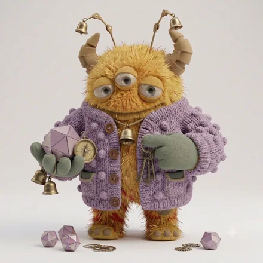
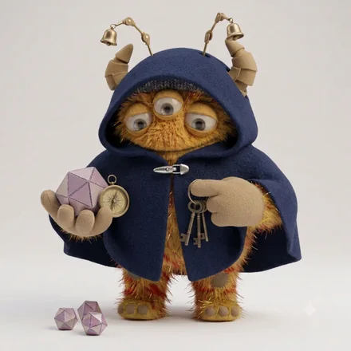
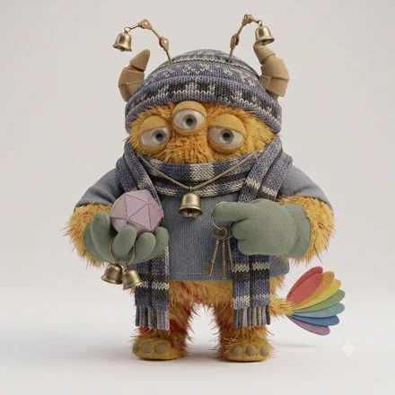

monster type
ESFP-O-H
心配りのお祭りモンスター
いまこの瞬間を、豊かにしてしまう人
あなたという人
場を明るくし、人を楽しませることに長けています。五感が鋭く、体験を通して学びます。先の計画より目の前の充実を選ぶため、続ける仕組みづくりが課題になります。
場を楽しませながら、一人ひとりの様子まで気にかけるタイプ。人を疑わずに開き、自分の振る舞いを何度も振り返るので、細やかさが際立ちます。ただ、楽しませたあとで「あれでよかったか」と考えてしまい、疲れが残ります。
4つのサブタイプの中での位置
 ESFP-A-H太陽のようなお祭りモンスター
ESFP-A-H太陽のようなお祭りモンスター
ESFP-A-C粋なお祭りモンスター
ESFP-O-C物思うお祭りモンスター同じ基本タイプでも、自分への確信（A / O）と人への構え（H / C）で現れ方が変わります。
強みと、気をつけたいところ
ここは基本タイプ（ESFP）に共通する性質です。
強み
- 緊張した場を一瞬でやわらげる
- 人の変化や表情によく気づく
- 行動が速く、体験から学べる
気をつけたいところ
- 面倒なことを先送りにしやすい
- 批判や無関心に落ち込みやすい
- 長期の管理業務が続かない
ESFP-O-H ならでは
このタイプの強み
にぎやかな場でも、置いていかれている人を見つけられる。顧客の心をつかむ仕事に向いています。
落とし穴
人の反応に一喜一憂して消耗する。反応を確かめる回数をあらかじめ決めておくと、気持ちが振り回されません。
仕事での適性
力を発揮する環境
人と接し、反応がその場で返ってくる環境
向いている役割
接客、発信、現場づくり、チームの空気づくり
顧客の心をつかむ仕事に。評価との距離の取り方が課題。
相性
かみ合う相手
見ている世界が補い合う組み合わせ。人への構えが同じなので距離の取り方で揉めにくく、自分への確信が違うぶん、迷いのなさと慎重さを互いに預けられます。
安心できる相手

テンポも間合いも近く、説明のいらない関係になりやすい相手。長く一緒にいても疲れにくい組み合わせです。
刺激をくれる相手
価値観の置き所が違うため摩擦は起きますが、自分に足りない視点を最も速く手渡してくれる相手です。
相手のコードがわかれば、2人の相性をこの場で見られます。
この人との相性を調べるこの診断は、回答時点での自己認識を6つの軸で整理したものです。人の性格は状況や時期によって変わります。
© 2026 WONDER BROTHERS INC. All rights reserved.